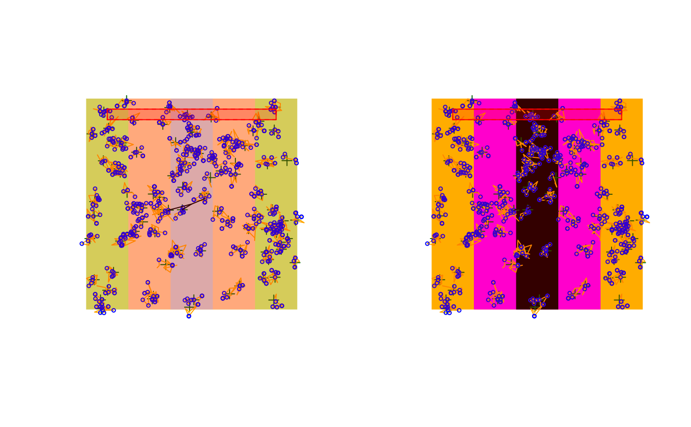

Plot methods
plot.RdPlot methods for different bSims objects.
Usage
# S3 method for class 'bsims_landscape'
plot(x,
col_H, col_E, col_R,
xlim = NULL, ylim = NULL, ...)
# S3 method for class 'bsims_population'
plot(x,
pch_nest, col_nest, cex_nest, ...)
# S3 method for class 'bsims_events'
plot(x,
event_type=c("vocal", "move", "both"), tlim = NULL,
pch_nest, col_nest, cex_nest,
pch_vocal, col_vocal, cex_vocal,
lty_move, col_move, lwd_move, ...)
# S3 method for class 'bsims_detections'
plot(x,
event_type=NULL, tlim = NULL,
pch_nest, col_nest, cex_nest,
pch_vocal, col_vocal, cex_vocal,
lty_move, col_move, lwd_move,
lty_det_vocal, col_det_vocal, lwd_det_vocal,
lty_det_move, col_det_move, lwd_det_move,
condition = "event1", ...)
# S3 method for class 'bsims_transcript'
plot(x,
pch_nest, col_nest, cex_nest,
pch_vocal, col_vocal, cex_vocal,
lty_move, col_move, lwd_move,
lty_det_vocal, col_det_vocal, lwd_det_vocal,
lty_det_move, col_det_move, lwd_det_move,
show_tint=TRUE, show_rint=TRUE,
col_tint, col_rint, ...)
# S3 method for class 'bsims_events'
lines(x, tlim = NULL, ...)
# S3 method for class 'bsims_detections'
lines(x,
event_type=NULL, tlim=NULL, condition="event1", ...)
# S3 method for class 'bsims_transcript'
lines(x,
event_type=NULL, tlim=NULL, ...)
# S3 method for class 'bsims_population'
points(x, ...)
# S3 method for class 'bsims_events'
points(x,
event_type=c("vocal", "move", "both"), tlim = NULL, ...)
# S3 method for class 'bsims_detections'
points(x,
event_type=NULL, tlim=NULL, condition="event1", ...)
col2hex(col, alpha = FALSE)
# S3 method for class 'bsims_events_table'
plot(x,
xlab, ylab, xlim, ylim, col_det_vocal, col_det_move, ...)
# S3 method for class 'bsims_detections_table'
plot(x,
type=c("time", "distance"), xlab, ylab, xlim, ylim,
col_det_vocal, col_det_move, ...)Arguments
- x
simulation object.
- col
color values.
- col_H, col_E, col_R
color values for the Habitat, Edge, and Road strata.
- event_type
type of events to access. The value is inferred from the input object when
NULL.- xlim, ylim, tlim
x, y, time intervals.
- xlab, ylab
x and y axis labels.
- pch_nest, col_nest, cex_nest
visual characteristics of nest locations.
- pch_vocal, col_vocal, cex_vocal
visual characteristics of vocalization events.
- lty_move, col_move, lwd_move
visual characteristics of movement events.
- lty_det_vocal, col_det_vocal, lwd_det_vocal
visual characteristics of detection events related to vocalizations.
- lty_det_move, col_det_move, lwd_det_move
visual characteristics of detection events related to movements.
- alpha
alpha channel for colors.
- show_tint, show_rint
whether time and distance intervals should be displayed.
- col_tint, col_rint
colors for time and distance intervals.
- condition
conditioning type to define availability for each individual, see
bsims_detect.- type
what the x axis should be: time or distance.
- ...
other graphical arguments.
Details
The main plotting functions use a theme defined in
the option getOption("bsims_theme").
Overriding these default settings allows customization.
Value
These plotting functions are called for their side effects and silently return the input object.
col2hex is modeled after col2rgb
and returns a character vector giving hexadecimal color codes with
or without alpha channel values.
Examples
b <- bsims_all(road=1, edge=2, move_rate=1, movement=0.2)$new()
o <- getOption("bsims_theme")
str(o)
#> List of 20
#> $ col_H : chr "darkolivegreen1"
#> $ col_E : chr "burlywood1"
#> $ col_R : chr "lightgrey"
#> $ col_nest : chr "darkgreen"
#> $ pch_nest : num 3
#> $ cex_nest : num 1
#> $ col_vocal : chr "blue"
#> $ pch_vocal : num 21
#> $ cex_vocal : num 0.5
#> $ col_move : chr "orange"
#> $ lty_move : num 1
#> $ lwd_move : num 1
#> $ col_det_vocal: chr "black"
#> $ lty_det_vocal: num 1
#> $ lwd_det_vocal: num 1
#> $ col_det_move : chr "purple"
#> $ lty_det_move : num 1
#> $ lwd_det_move : num 1
#> $ col_tint : chr "red"
#> $ col_rint : chr "red"
n <- o
n$col_H <- "gold"
n$col_E <- "magenta"
n$col_R <- "black"
op <- par(mfrow=c(1, 2))
plot(b)
options("bsims_theme" = n) # apply new theme
plot(b)

par(op)
options("bsims_theme" = o) # reset old theme
col2hex(c(blu = "royalblue", reddish = "tomato"), alpha = FALSE)
#> blu reddish
#> "#4169E1" "#FF6347"
col2hex(c(blu = "royalblue", reddish = "tomato"), alpha = TRUE)
#> blu reddish
#> "#4169E1FF" "#FF6347FF"